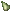
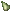

enchanted apple
[魔法のリンゴ]
 apple×1
apple×1 Greater heal pot.×1
Greater heal pot.×1
grapes of wrath
[怒りのブドウ]
 grape×1
grape×1 Greater strength pot.×1
Greater strength pot.×1fruit bowl
[フルーツボウル]
 pear×3
apple×3
banana×3
| アイテム | 作成難易度 | 必要材料 |
enchanted apple [魔法のリンゴ] |
60.0 | apple×1 Greater heal pot.×1 |
grapes of wrath [怒りのブドウ] |
95.0 | grape×1 Greater strength pot.×1 |
fruit bowl [フルーツボウル] |
55.0 |
wooden bowl×1
 pear×3 apple×3
banana×3 |
| アイテム | 作成難易度 | 必要材料 |
great barracuda pie [グレートバラクーダのパイ] |
60.0 |  生地×1 生地×1
×1  粉菌キノコ×1 粉菌キノコ×1
 メント調味料×1 メント調味料×1 |
 giant koi pie [コイのパイ] |
61.0 | 生地×1
×1 豆のボウル×1 メント調味料×1 |
 fire fish pie [ファイアフィッシュのパイ] |
62.0 | 生地×1
 ×1 ×1
ニンジン×1 サミュエル特製ソース×1 |
 stone crab pie [ストーンクラブのパイ] |
63.0 | 生地×1
 ×1 ×1
 キャベツ×1 キャベツ×1
サミュエル特製ソース×1 |
blue lobster pie [ブルーロブスターのパイ] |
64.0 | 生地×1
×1  部族イチゴ×1 部族イチゴ×1
サミュエル特製ソース×1 |
reaper fish pie [リーパーフィッシュパイ] |
65.0 | 生地×1
×1  カボチャ×1 カボチャ×1
サミュエル特製ソース×1 |
 crystal fish pie [クリスタルフィッシュパイ] |
66.0 | 生地×1
×1 リンゴ×1
サミュエル特製ソース×1 |
bull fish pie [ブルフィッシュパイ] |
67.0 | 生地×1
 ×1 ×1
 ウリ×1 ウリ×1
サミュエル特製ソース×1 |
 summer dragonfish pie [夏竜魚のパイ] |
68.0 | 生地×1
 ×1 ×1
玉ねぎ×1 メント調味料×1 |
fairy salmon pie [フェアリーサーモンパイ] |
69.0 | 生地×1
×1  トウモロコシ×1 トウモロコシ×1
ダークトリュフ×1 |
 lava fish pie [ラヴァフィッシュパイ] |
70.0 | 生地×1
 ×1 ×1
チーズ×1 ダークトリュフ×1 |
autumn dragonfish pie [秋竜魚のパイ] |
71.0 | 生地×1
 ×1 ×1
洋ナシ×1 メント調味料×1 |
 spider crab pie [スパイダークラブパイ] |
72.0 | 生地×1
 ×1 ×1
レタス×1 メント調味料×1 |
 yellow barracuda pie [イエローバラクーダのパイ] |
73.0 | 生地×1
 ×1 ×1
 ワインの瓶×1
メント調味料×1 ワインの瓶×1
メント調味料×1 |
holy mackerel pie [ギョギョのパイ] |
74.0 | 生地×1
×1  ハチミツ×1
メント調味料×1 ハチミツ×1
メント調味料×1 |
unicorn fish pie [ユニコーンフィッシュパイ] |
75.0 | 生地×1
×1  ショウガ×1
メント調味料×1 ショウガ×1
メント調味料×1 |
| アイテム | 効果 |
great barracuda pie [グレートバラクーダのパイ] |
命中+8％ |
giant koi pie [コイのパイ] |
回避+8％ |
fire fish pie [ファイアフィッシュのパイ] |
炎吸収5％ |
stone crab pie [ストーンクラブのパイ] |
物理吸収5％ |
blue lobster pie [ブルーロブスターのパイ] |
冷気吸収5％ |
reaper fish pie [リーパーフィッシュパイ] |
毒吸収5％ |
crystal fish pie [クリスタルフィッシュパイ] |
エネルギー吸収5％ |
bull fish pie [ブルフィッシュパイ] |
武器ダメージ+5％ |
summer dragonfish pie [夏竜魚のパイ] |
魔法ダメージ+5％ |
fairy salmon pie [フェアリーサーモンパイ] |
詠唱集中2％ |
lava fish pie [ラヴァフィッシュパイ] |
マナ変換5％ |
autumn dragonfish pie [秋竜魚のパイ] |
meditation[瞑想]+10 |
spider crab pie [スパイダークラブパイ] |
focus[集中]+10 |
yellow barracuda pie [イエローバラクーダのパイ] |
ヒットポイント回復 3 |
holy mackerel pie [ギョギョのパイ] |
マナ回復 3 |
unicorn fish pie [ユニコーンフィッシュパイ] |
スタミナ回復 3 |